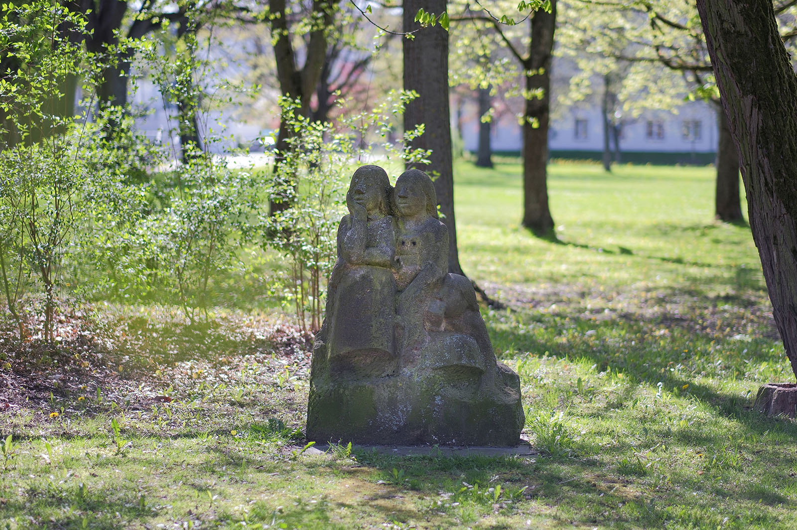
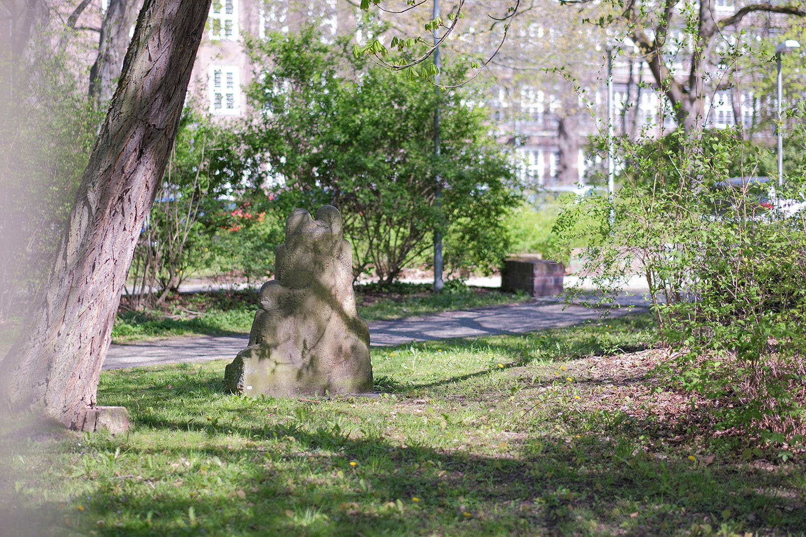
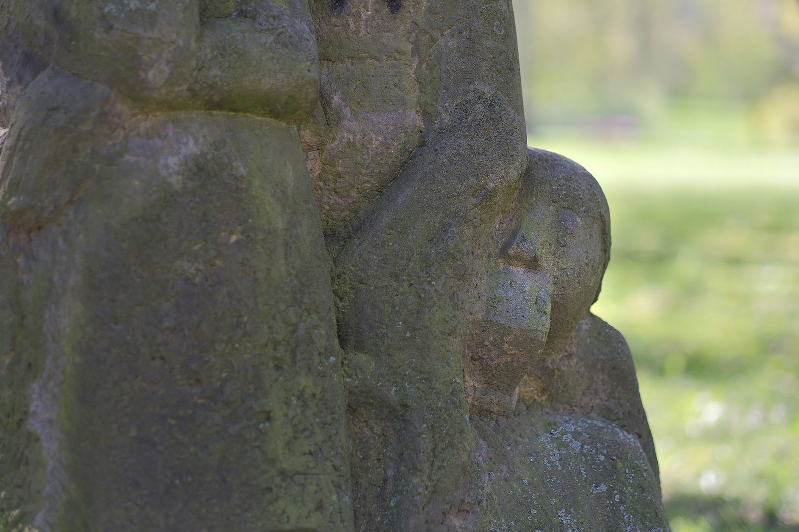
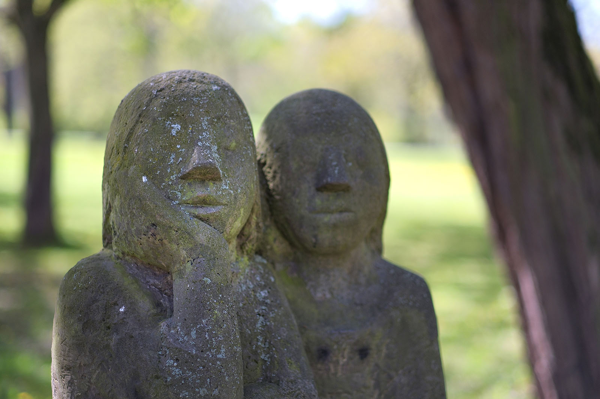

Recherche und Werkbeschreibung: Roman Pilz. Text und Fotografien wechseln sich wie in einem Magazin ab. Ein Klick auf ein Bild öffnet die Großansicht.
"Die Lauschenden" von Peter Fritzsche gehört zum großen Ensemble von Skulpturen und Plastiken, die 1980 zum Schmuck des erneuerten Schauspielhauses von der Stadt angekauft und im heutigen Park der Opfer des Faschismus aufgestellt wurden. Zur Eröffnung war Fritzsches Skulptur noch näher am Theatergebäude aufgestellt, etwa auf Höhe des "Tanzenden Mädchens" von Gerhard Lichtenfeld. Heute hält das Kunstwerk des Freitaler Bildhauers vom Eingang des Schauspielhauses den größten Abstand und ist Richtung Stadtzentrum, neben dem Zugang zum Mahnmal für die Opfer des Faschismus beim Agricolagymnasium, positioniert.
Drei Kinder, eng beieinander hockende Mädchen in langen Kleidern, schauen und horchen konzentriert auf ein Geschehen oder eine Erzählung. Der Künstler haut seine Figuren aus einem massiven Sandsteinblock. Unten bearbeitet er den Stein nur wenig, lässt ihm die rechteckige Grundform als Basis. Darüber steigen die Formen der Figuren mehr oder weniger ausgestaltet aus dem Stein auf. Vieles, vor allem der hockenden Figur zur Linken der zwei höher aufragenden Mädchen, bleibt im Stein verborgen. Nur der Kopf des unteren Kindes, der locker auf eine Faust gestützt wird, sowie ihre Seite sind andeutungsweise aus dem Stein gearbeitet.
Dem Leben lauschen
Die Sandsteinskulptur „Die Lauschenden (Heiden von Kummerow)“ (1979, angekauft 1980) von Peter Fritzsche im Park der Opfer des Faschismus
Dort, wo die Füße der zwei größeren Figuren stehen müssten, in den Schatten der langen Röcke, hält der Bildhauer die Form unbestimmt. Markante, langgezogene Spuren des spitzen Meißels deuten zwar das Volumen der Körper schon an, werden aber erst weiter oben glatter und weicher gestaltet. Das rechte Mädchen bestimmt die Gruppe: Sie ist die größte, am meisten aus dem Stein gebildete Figur. Auch sie legt ihren Kopf mit dem langen glatten Haar ruhig in ihre aufgestützte Hand und gibt Acht. Ihre andere Hand hängt locker über dem Schoß, daneben schmiegt sich eine Freundin eng an ihre Schulter.

Die Inspiration zur Figurengruppe gab wohl der berühmte Roman "Die Heiden von Kummerow" des aus der Nähe von Angermünde stammenden Schriftstellers Ehm Welk. Aus der Sicht kindlicher Protagonisten auf dem Lande wird in dem Buch die Dorfgesellschaft in der Kaiserzeit anschaulich dargestellt. Die Jungs, angeführt von der Hauptfigur Martin Grambauer, erkunden die Natur, spielen Streiche und bestehen Mutproben. Die Mädchen sind ihre natürlichen Komplizen und ihr erstes Publikum. Der alte Kuhhirte und gesellschaftliche Außenseiter Krischan ist für einige der Kinder eine besondere Bezugsperson – er steht am Rand der Erwachsenenwelt, erzählt den beeindruckten Kindern von seiner Vergangenheit und seinem Wissenschatz.

Als "Lauschende" betitelt, verkörpert die Skulptur vor diesem Hintergrund möglicherweise eine der Situationen aus dem auch zu DDR-Zeiten beliebten Buch, das 1967 sogar von der DEFA verfilmt wurde – die Kinder lauschen einer der im Buch vermittelten Erzählungen oder sind die Zeuginnen eines der Wettkämpfe der Jungs. Die Mädchen können aber auch allgemeiner für den idealen Zuschauer im Theater stehen: einen innerlich beteiligten, aber stillen, gebannt aufmerksamen Beobachter. Kinder mit ihrer unerschöpflichen Begeisterungsfähigkeit werden so zum Vorbild für den Theaterbesucher – die Darbietungen für die Kleinsten, meist das Figurentheater oder Märchenstücke, zeigen den Erwachsenen, was es heißt, sich auf eine Geschichte einzulassen.


Dem Leben lauschen
Die Sandsteinskulptur „Die Lauschenden (Heiden von Kummerow)“ (1979, angekauft 1980) von Peter Fritzsche im Park der Opfer des Faschismus